1. 거래명세서 작성
이 화면에서 거래명세서를 직접 작성하여 거래명세서를 생성할 수 있습니다.
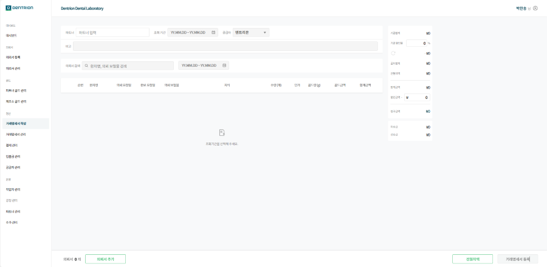
1-1. 기능 설명
1-1-1. 작성 방법
[파트너 선택]
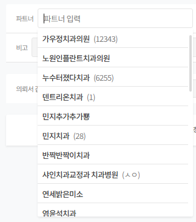
파트너 선택 전 모든 항목 비활성화 상태입니다.
파트너 클릭 시 목록에서 선택 시 조회 기간, 공급자, 비고 항목이 활성화됩니다.
[조회 기간]
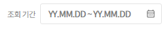
원하는 기간의 거래명세서을 상세 검색할 수 있습니다.
조회 기간 선택 시 해당 기간 내에 포함되있는 의뢰 목록이 리스트업 됩니다.
조회 기간 내에 포함된 의뢰가 없는 경우 “조회된 의뢰서가 없습니다”라는 문구가 표시됩니다.
달력 버튼 클릭 예시
달력 버튼 클릭 시 월 단위 달력이 표시되며, 일 단위로 날짜를 선택할 수 있습니다.
첫 번째 선택 날짜 → **조회 시작일**
두 번째 선택 날짜 → **조회 종료일**
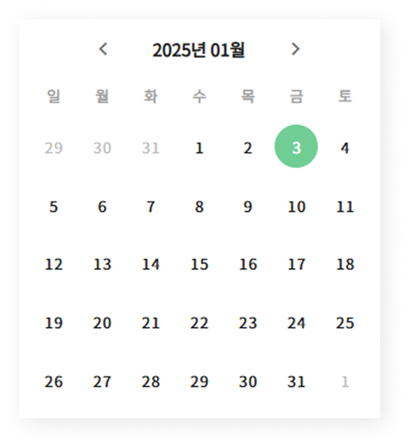
[공급자]
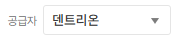
기본값으로 선택한 파트너의 공급자로 표시됩니다.
해당 기간의 거래명세서만 공급자 변경이 필요한 경우 수정할 수 있습니다.
파트너의 공급자를 변경할 경우 [파트너 관리]에서 수정할 수 있습니다.
[비고]
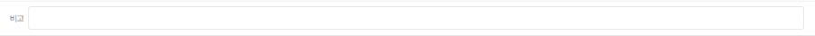
거래명세서의 특이 사항 및 참고 사항을 비고란에 작성할 수 있습니다.
거래명세서에서 비고 작성 시 거래명세서 출력하는 경우 같이 출력됩니다.
[검색]
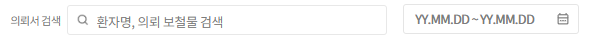
조회한 기간내에 특정 환자 또는 의뢰 보철물로 검색이 가능합니다.
조회 기간내 특정 기간을 설정하여 의뢰를 확인할 수 있습니다.
[의뢰 목록]
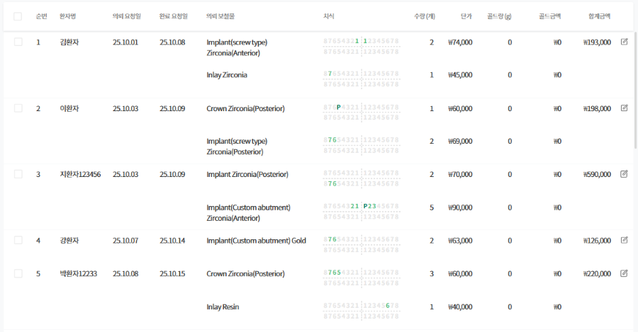
조회한 기간내에 의뢰 목록이 리스트업됩니다.
의뢰 요청일 기준 오름차순으로 정렬됩니다.
우측 수정 버튼을 통해 의뢰를 수정할 수 있습니다.
[의뢰서 추가]
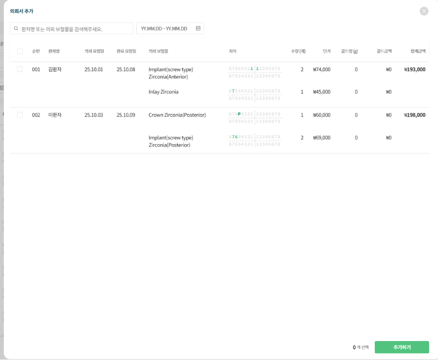
[의뢰서 추가] 버튼 클릭 시 팝업창이 생성됩니다.
해당 조회한 기간내에 누락된 의뢰서 또는 의뢰서 제외한 목록이 리스트업 됩니다.
의뢰서를 선택 후 [추가하기] 버튼 클릭 시 거래명세서에 추가됩니다.
[전월차액]
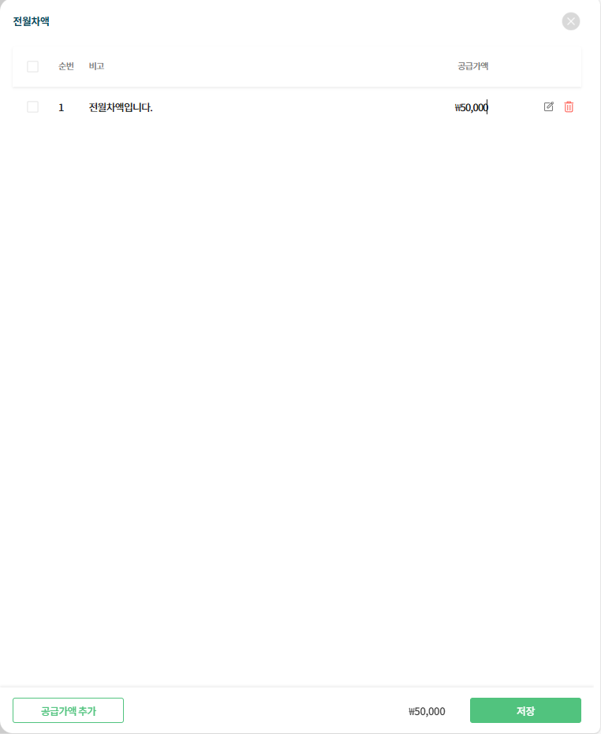
[전월차액] 버튼 클릭 시 팝업창이 생성됩니다.
전월차액 목록 및 수정, 삭제가 가능합니다.
전월차액 추가 시 좌측 하단에 [공급가액 추가]버튼을 통해 전월차액을 추가할 수 있습니다.
수정 사항이 있는 경우 [저장] 버튼이 활성화 되며 클릭 해야 수정 내역이 적용됩니다.
[할인율 & 할인 금액]
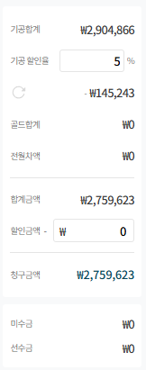
기공 할인율은 파트너 선택 시 기본 설정 되있는 할인율이 자동으로 반영됩니다.
할인 금액을 입력 시 최종 청구 금액에서 반영됩니다.
[거래명세서 등록]
거래명세서 작성 시 적용 사항이 있을 경우 [거래명세서 등록] 버튼이 활성화됩니다.
1-1-2. 거래명세서 작성하는 경우
거래명세서 기간이 매월 다른 파트너 경우
거래명세서 관리에서 해당 파트너 거래명세서를 삭제합니다.
거래명세서 작성에서 파트너 선택 후 조회 기간 설정하여 [거래명세서 등록]클릭 시 생성됩니다.
파트너의 거래명세서 기간이 직접 생성일 경우
거래명세서 작성에서 파트너 선택 후 조회 기간 설정하여 [거래명세서 등록]클릭 시 생성됩니다.
실수로 거래명세서를 삭제한 경우
거래명세서를 삭제해도 의뢰서가 삭제되는게 아니기 때문에 [거래명세서 작성]에서 재작성하면 거래명세서가 생성됩니다.
1-1-3.거래명세서 작성 시 주의 사항
[거래명세서 작성]에서 재작성 시 [거래명세서 관리]의 작성 중 상태가 아닌 검토 중 상태로 바로 넘어갑니다.
검토 중 상태로 넘어간 거래명세서에는 의뢰서 등록 시 자동으로 의뢰가 쌓이지 않습니다.
검토 중으로 넘어간 경우 거래명세서 상세에서 [의뢰서 추가]로 의뢰서를 추가 해야합니다.
이미 생성된 거래명세서는 재작성이 불가합니다.
기존 거래명세서를 삭제 후 재작성 해야합니다.